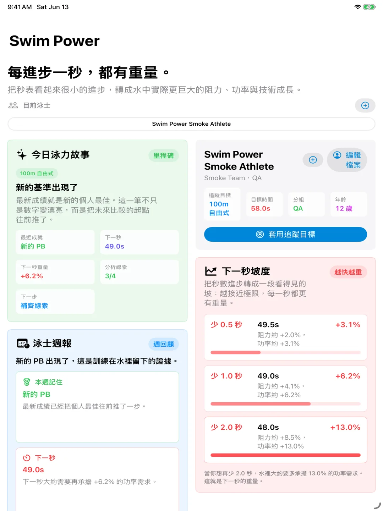
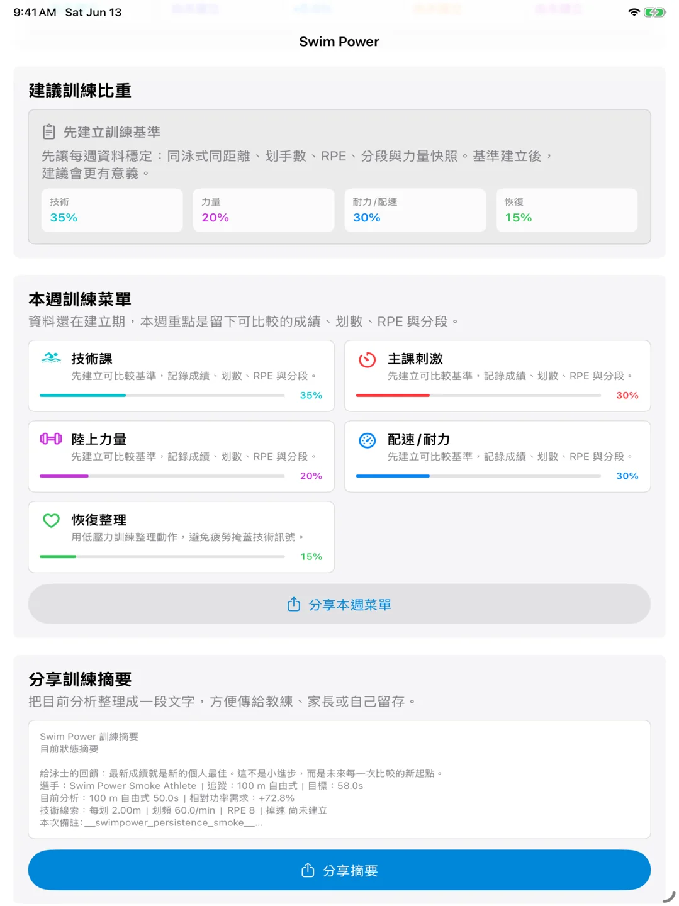
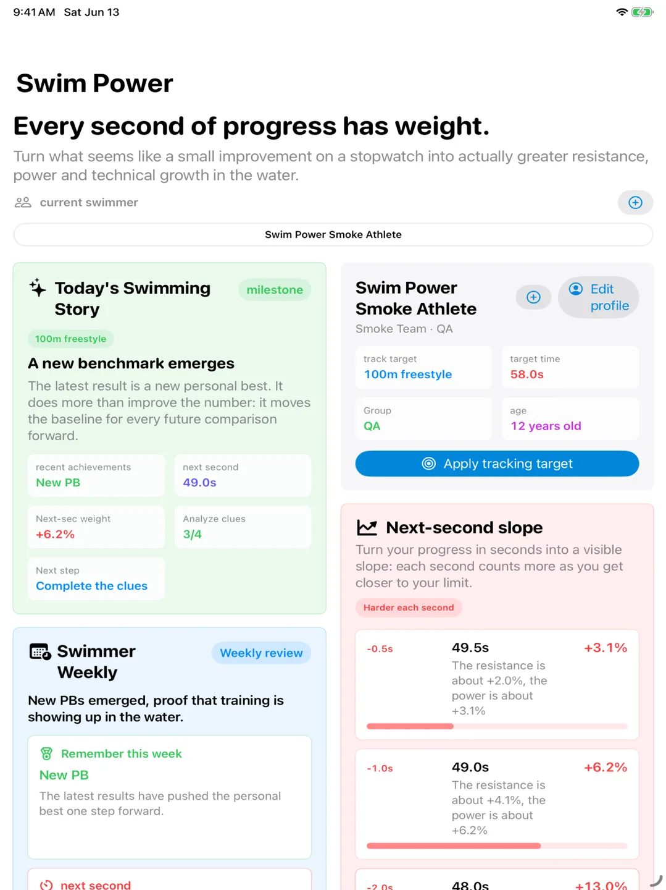
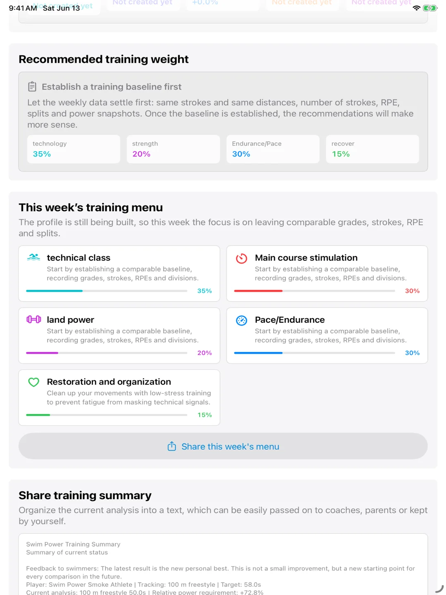

Swim Power
Swim Power 是給游泳者、家長與教練使用的訓練記錄 App。它把游泳秒數轉換成速度、阻力需求與相對功率需求，讓「快一秒」背後的訓練意義變得更清楚。
游泳不是單純再用力一點就會線性變快。當速度提高，水阻與功率需求會非線性上升；Swim Power 用保守、可解釋的相對模型，幫助你看見每一次小進步其實有多重。
- 可用裝置
- iPhone / iPad
- 下載方式
- 付費下載
{kind=link}

{kind=link}

讓看不見的進步變得可讀
App 會以個人基準為起點，計算速度、阻力需求、相對功率需求與 Swim Power Index。對選手來說，這能把成績表上的秒數轉成更容易討論的訓練訊號。
從成績到訓練方向
你可以記錄泳式、距離、時間、分段、划手數、主觀用力程度與備註。Swim Power 會協助觀察個人最佳、目標時間、下一秒進步的重量、成長趨勢與訓練比重方向。
身體、力量與水中表現
對成長中的選手來說，身高、體重、體脂與力量變化都可能影響表現解讀。Swim Power 可追蹤身體快照與力量測試，協助觀察乾地力量是否真的轉換到水中。
資料帶著走
- 本機記錄選手檔案、游泳成績、身體快照與力量測試
- 可選擇授權 HealthKit 匯入游泳 workout 與身體資料
- 支援 CSV 匯出與匯入，方便備份或交接給教練
- 可整理週回顧、訓練焦點與可分享的教練摘要
- 使用本機通知提醒回顧進步，不需要帳號或遠端推播
不是實驗室儀器，而是更好的訓練對話
Swim Power 不宣稱直接測量推進力，也不取代正式運動科學評測。它的目標是把訓練紀錄變成選手、家長與教練都能看懂、能討論、能持續追蹤的成長線索。
本機處理與隱私
Swim Power 以本機資料處理為核心。第一版不需要帳號，不使用第三方分析 SDK，不追蹤使用者，也不會把資料自動上傳到伺服器。
Swim Power
Swim Power is a training log for swimmers, parents, and coaches. It turns swim times into velocity, drag-demand, and relative power-demand insights, making the meaning behind "one second faster" easier to understand.
Swimming progress is not linear. As speed increases, drag and power demand rise sharply. Swim Power uses a conservative relative model to make small time gains feel visible, discussable, and worth tracking.
- Devices
- iPhone / iPad
- Download
- Paid download
{kind=link}

{kind=link}

Make Invisible Progress Readable
The app starts from a personal baseline and calculates velocity, drag demand, relative power demand, and a Swim Power Index. For swimmers, this turns stopwatch numbers into clearer training signals.
From Race Times to Training Direction
Users can record stroke, distance, time, splits, stroke count, perceived effort, and notes. Swim Power helps reveal personal bests, target times, the weight of the next second, progress trends, and training focus.
Body, Strength, and Water Performance
For growing athletes, height, body mass, body composition, and strength changes can affect how performance should be interpreted. Swim Power can track body snapshots and strength tests to help observe whether dryland strength is transferring into the water.
User-Owned Data
- Track athlete profiles, swim records, body snapshots, and strength tests locally
- Optionally import authorized swim workouts and body data from HealthKit
- Export and import CSV files for backups or coach handoffs
- Review weekly focus, progress notes, and shareable coach summaries
- Use local reminders for progress review without accounts or remote push
Not a Lab Instrument, but a Better Training Conversation
Swim Power does not claim to directly measure propulsion and does not replace formal sports-science assessment. Its goal is to make training records easier for swimmers, parents, and coaches to understand, discuss, and follow over time.
Local Processing and Privacy
Swim Power is designed around local data processing. The first version does not require an account, does not use third-party analytics SDKs, does not track users, and does not automatically upload data to developer-operated servers.